Présentation d'EduTechWiki
Mattia A. Fritz
TECFA, Université de Genève
Qu'est-ce qu'EduTechWiki
EduTechWiki est un wiki sur la technologie éducative et domaines
annexes hébergé et maintenu à TECFA depuis 2006.
EduTechWiki est un projet lancé
par
Daniel K. Schneider, ancien professeur à TECFA.
Deux versions d'EduTechWiki
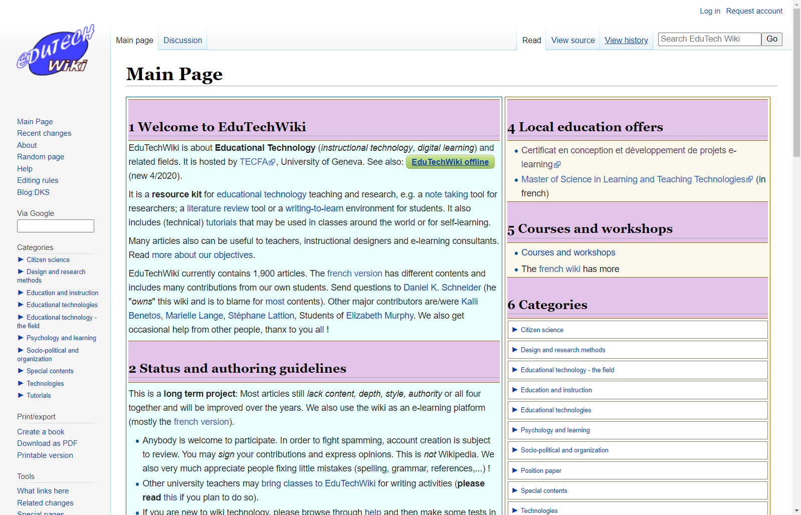
Version en
anglais
Plus d'articles, mais moins de contributeurs.
Utilisation du wiki assez standard.
Plus d'articles, mais moins de contributeurs.
Utilisation du wiki assez standard.
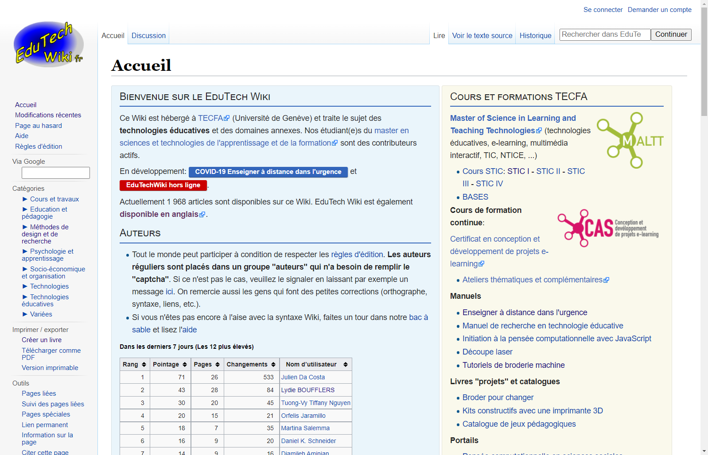
Version en
français
Moins d'articles, mais plus de contributeurs.
Utilisation du wiki plus variée.
Traitée davantage dans cette présentation
Moins d'articles, mais plus de contributeurs.
Utilisation du wiki plus variée.
Traitée davantage dans cette présentation
Trafic global généré
Nombre de visiteurs par année sur les deux versions :
1.3 mio
2017
2017
1.5 mio
2018
2018
1.4 mio
2019
2019
1.2 mio
2020
2020
1.1 mio
2021
2021
Souvent parmi les premiers résultats des moteurs de recherche grâce
à sa stabilité dans le temps.
Utilisations d'EduTechWiki (fr)
-
Base de connaissances
Articles/pages/portails à propos de la technologie éducative et domaines annexes -
Plateforme pédagogique
Pilotage et support de cours, écrire pour apprendre, productions/portfolio travaux étudiant-es, ... -
Open Education
Matériel pédagogique ouvert et participatif, organisé en parcours/thématiques -
Mémoire historique
Durabilité des ressources dans le temps : trace de séminaires, événements, ...
Dans l'esprit
réseau d'un wiki, plusieurs recouvrements/liens entre
utilisations
Portail de connaissances
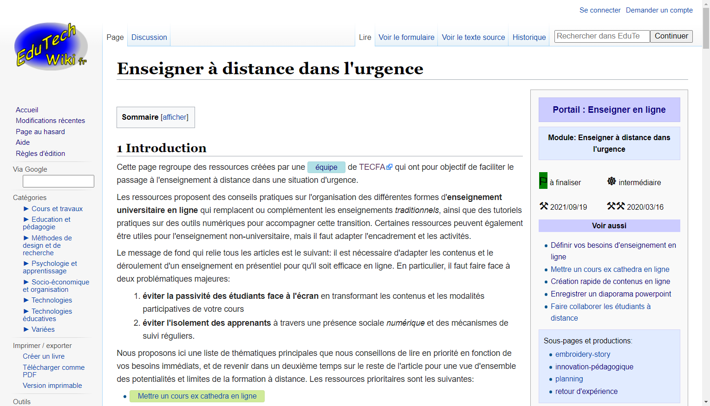
Collection de ressources sur
l'enseignement en ligne, par exemple en
situation d'urgence dans le passage présentiel/distance.
Plateforme pédagogique
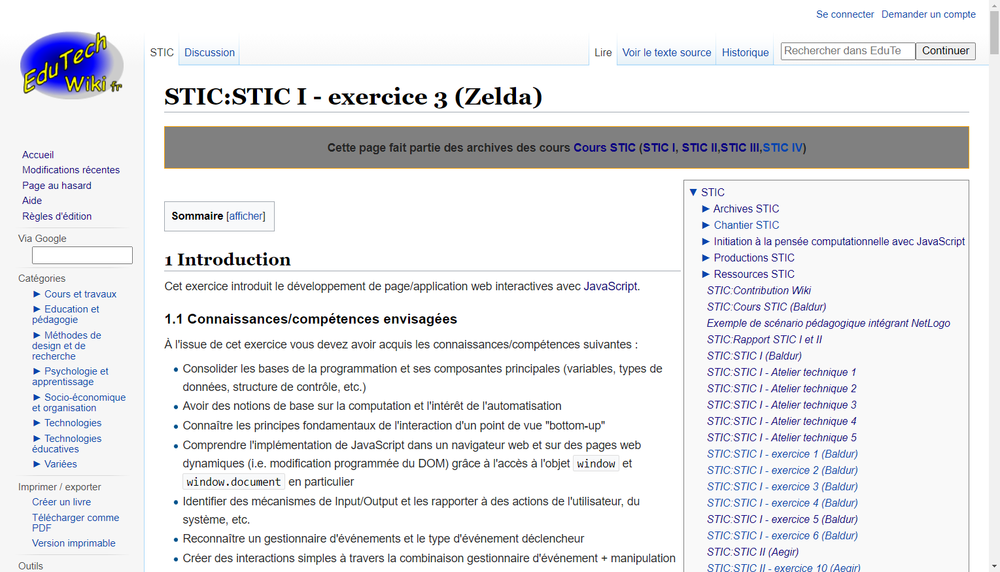
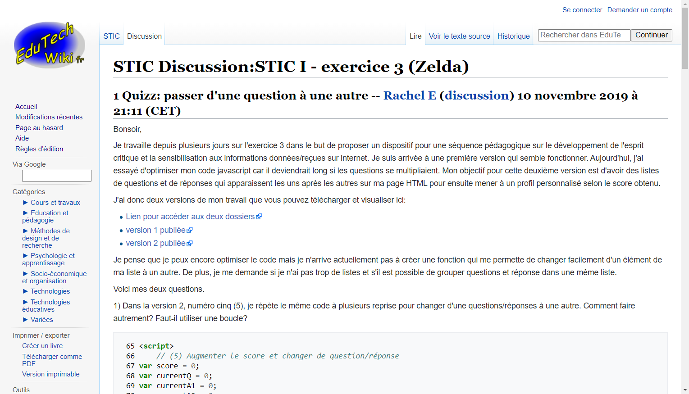
Dans le cours
STIC I
du
MALTT, la page dispense la scénarisation pédagogique (contenus,
activités, consignes, ...) et l'onglet discussion le support pour
les étudiant-es.
ALT + clique de la souris sur l'image pour
agrandir.
Portail/plateforme pédag.
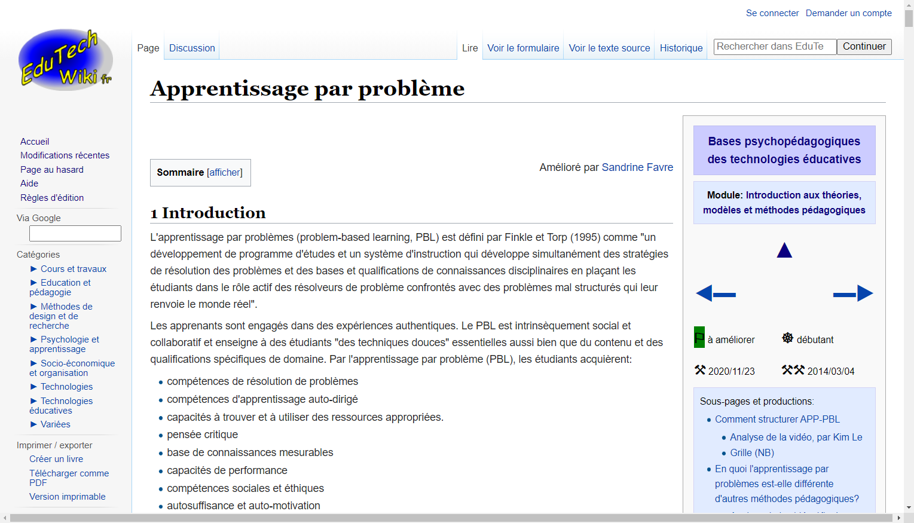
Dans le cours
BASES
du
MALTT, les étudiant-es contribuent à des articles qui forment un
portail sur les fondements psychopédagogiques des technologies
éducatives.
Base de connaissances
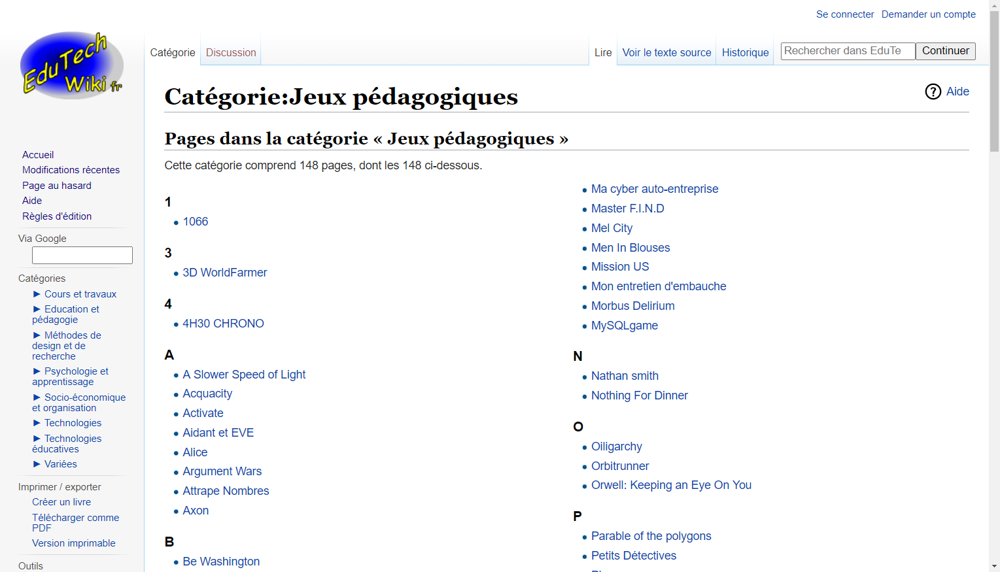
Dans le cous VIP du
MALTT, les étudiant-es créent des
fiches sur des jeux pédagogiques.
Portail/portfolio/historique
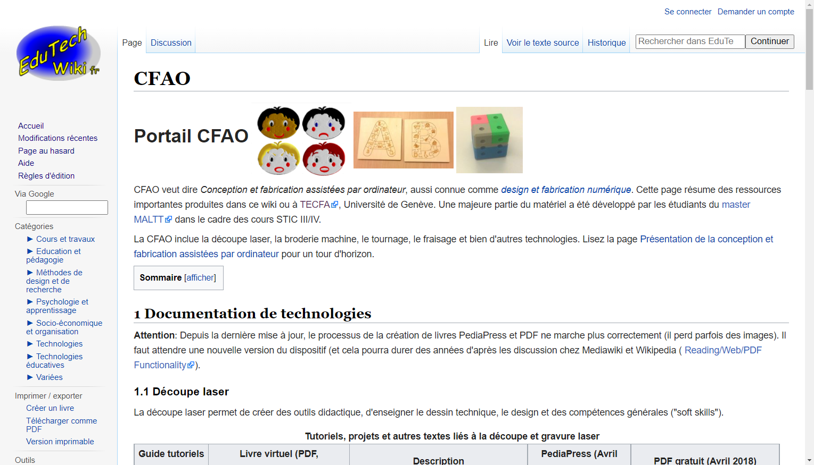
Le
portail sur la
CFAO
combine des tutoriels, un portfolio avec les productions
d'étudiant-es, ainsi qu'une liste d'événements de vulgarisation.
Open Education
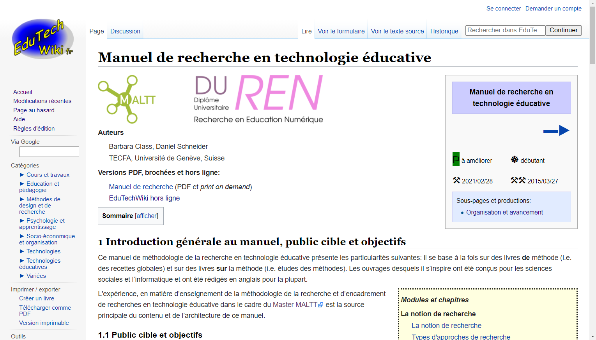
Ressources pédagogiques libres et ouvertes. À l'image,
le manuel de recherche en technologie éducative. Voir aussi
pensée computationnelle en sciences sociales.
Définition d'un wiki
Un wiki est un système de publication de contenus
hypertextuels, édités et gérés en
collaboration par son propre public, directement à l'aide d'un
navigateur Web.
— Adapté de Wikipedia anglais
Le mot wiki, qui signifie rapide ou
informel en hawaïen, se réfère à la fois aux principes ou
pratiques d'édition/gestion et aux technologies
sous-jacentes.
Caractéristiques habituelles
-
Peu ou pas de hiérarchie éditoriale
En principe, tous les utilisateurs peuvent ajouter, éditer, déplacer, effacer, ... du contenu sans processus de validation préalable. Si jamais quelqu'un d'autre va corriger... -
La page comme unité informationnelle
Tout dans un wiki est une page (articles, fichiers, profils utilisateurs, ...) : le wiki émerge de la relation des pages entre elles. -
Page = contenu + discussion
Chaque unité informationnelle dispose d'un contenu et d'un onglet discussion qui sert à la gestion de ce contenu. -
Mise à jour rapide et potentiellement en continu
L'édition est immédiate et l'historique des versions permet de restaurer des contenus au besoin.
Comparaison indicative
| Outil | Auteurs | M-à-j | Relation pages |
|---|---|---|---|
| Site | Entreprise, institution, ... | Ponctuelle | Navigation |
| Blog | Personne(s) spécifique(s) | Régulière | Chronologique |
| Wiki | Public/collectif | Fréquente | Sémantique |
Mais on peut utiliser un wiki comme site ou blog et on peut avoir
un wiki dans une autre application.
Fonctionnement technique
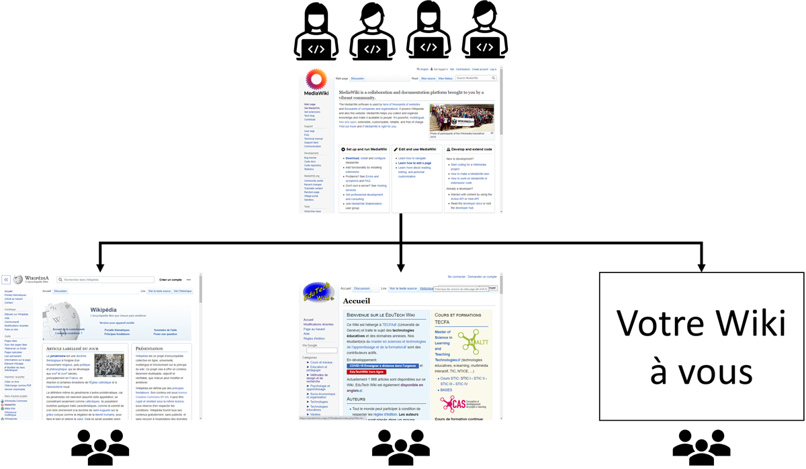
EduTechWiki utilise l'application/logiciel
MediaWiki,
le même moteur de Wikipedia, dont le code est open-source
et utilisable librement (compétences techniques et hébergement
nécessaires).
MediaWiki fournit de base
-
Gestion des utilisateurs et droits d'éditions
Système d'authentification (qui est qui ?) et autorisation (qui fait quoi ?) -
Stockage des pages/articles/éléments multimédia
Chaque unité informationnelle est identifiée par un titre unique et non ambigu. -
Syntaxe Wiki
Mise en page avec titres, paragraphes, italiques, etc., mais également fonctions plus avancées. -
Système hypermédia
Les liens internes sont le coeur d'un wiki et utilisent le titre de l'unité informationnelle. -
Historique des versions
Traçage des modifications (qui a changé quoi et quand ?) avec mécanisme de roll-back
Liste non
exhaustive
Différents types de pages
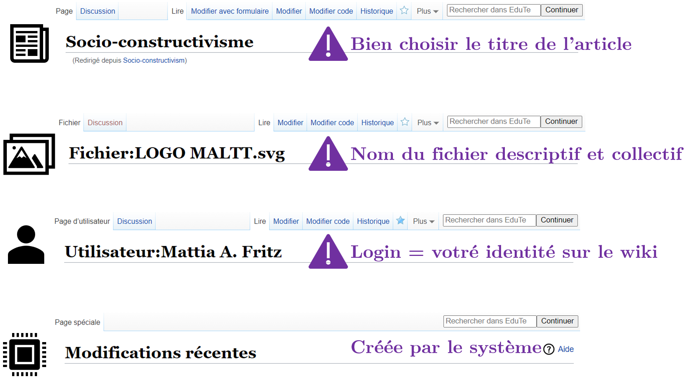Syntaxe MediaWiki
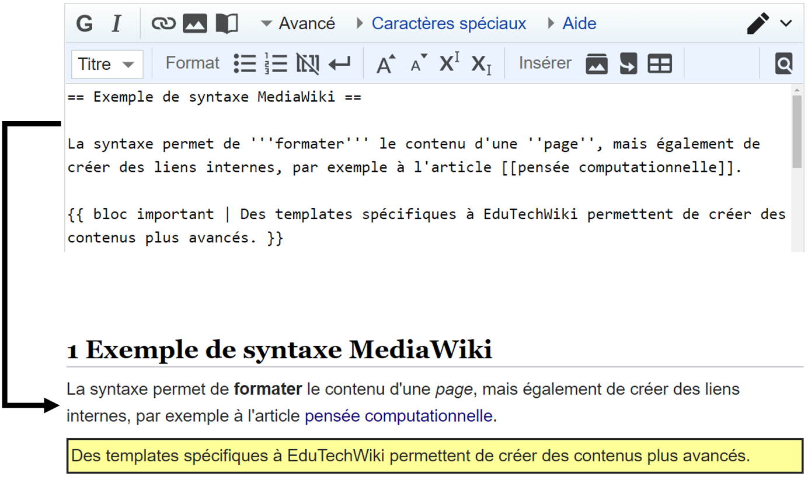
Voir la page d'aide, les
règles d'édition, l'édition de base, ou l'édition avancée.
Il existe également un éditeur visuel (WYSIWYG), mais la syntaxe est plus puissante.
Il existe également un éditeur visuel (WYSIWYG), mais la syntaxe est plus puissante.
Historique des versions
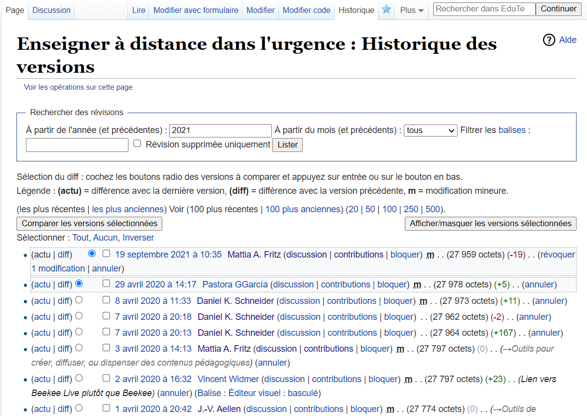
Tout changement au contenu d'une page est répertorié et peut être
comparé avec d'autres versions ou annulé au besoin. Voir
gestion de versions
pour le concept général.
Écosystème d'extensions
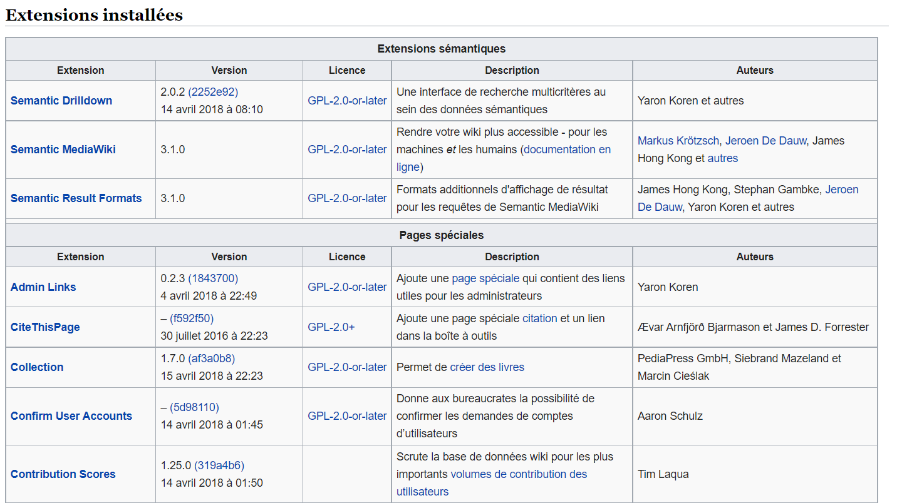
Des extensions permettent d'ajouter davantage des fonctionnalités
spécifiques. Certaines sont maintenues par MediaWiki, d'autres par
des particuliers/passionnés.
EduTechWiki hors ligne

Grâce à la collaboration avec
Kiwix, EduTechWiki peut
être utilisée aussi sans accès à internet, sur ordinateurs ou
mobile. Voir
EduTechWiki hors ligne
pour plus d'infos.
EduTechWiki est le résultat de...
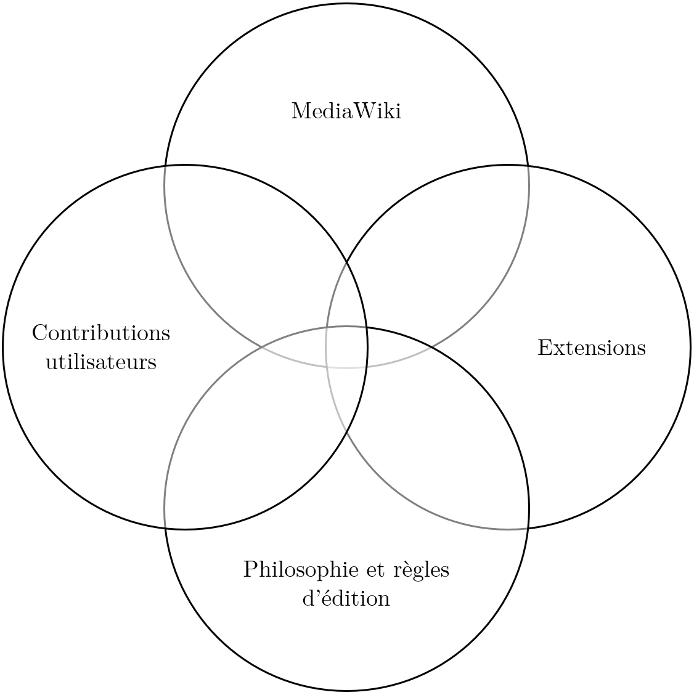
Les aspects techniques, communautaires et
philosophiques/sémantiques sont interdépendants et
s'influencent mutuellement. Tous sont nécessaires à la survie et
au succès d'un Wiki.
Pour aller plus loin...
Les pages suivantes permettent d'approfondir les thématiques traitées dans la présentation :